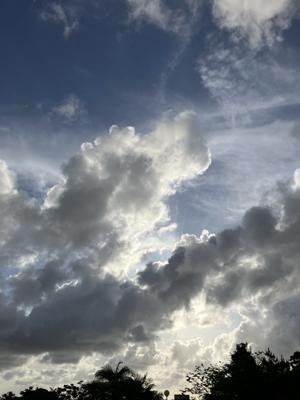

うるがいの話 ある日
最新: アップル【うるがいの話 ある日】とは 一日だけのプログです
『うるがいの話』の最新一日だけのプログで、通信料が少なく経済的だ。カニの画像をクリックすると全ての日付が載る『うるがいの話』サイトを表示します
|
|
【うるがいの話】 うるがい(ｳﾙｶﾞｲ urugai)とは、『もずくがに』の名前でとても大きくなります。 |
|---|---|
|
|
【カミマヤーの話】 猫のことを方言でマヤーといいます。カミマヤー（kamimayaa）とは、神の猫のことです。 |
|
【たながぁの音楽】 たながぁ（ﾀﾅｶﾞｰ tanagaa）とは手長えびのことで、何種類かあり大きいのは車 エビぐらいになります。 |

|
【ぶながぁの話】 ぶながぁ(ﾌﾞﾅｶﾞｰ bunagaa)とは、赤い髪の毛、赤い身体、そして身長は１ｍ２０ｃｍ ぐらい、川の蟹を食べているの目撃された。場所は沖縄県国頭郡大宜味村のと ある村僕の隣近所に住んでいる爺さんから、聞いた話です。 |
|
|
【ギーマの話】 ギーマ(giima)とは、山原の里山に咲くスズランに似た、 花を付けます。実は食べられます、 気が付くと口の周りが紫になっています。 |
2026年05月16日 (土）アップル
16:05

アダムズ・アップル ｂｓ１０プレミアム
仮釈放された前科者が更生施設を兼ねた教会で個性的な聖職者た
ちと出会う姿を描く。
日本ではＤＶＤも廃盤となり、劇場公開後視聴困難だった貴重作。
仮釈放されたアダムは更生施設を兼ねた田舎の教会へ送り込まれ
るが、ネオナチ思想に染まる彼は、指導役の聖職者イヴァンから
目標を問われ「庭のリンゴを収穫してアップルケーキを作る」と
適当な返事をする。イヴァンの自己欺瞞を執拗に暴こうとするア
ダムだったが、そんな彼に奇怪な災いが次々と降りかかる…。
面白い！、異色の映画を見た。デンマーク・ドイツ合作だが、エ
ンディングに聞いたことがある洋楽を英語で、歌っていた。早速
曲を調べる。昔の曲だべ、動画を作成することにする。
木になっているリンゴを見てみたい！と、思った。青森か台湾で
と思った。
梅雨の中休み、いい天気なので風呂場の掃除をする。